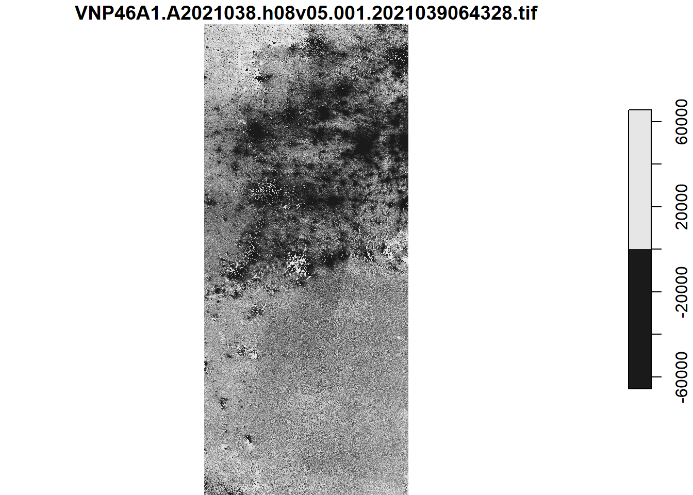
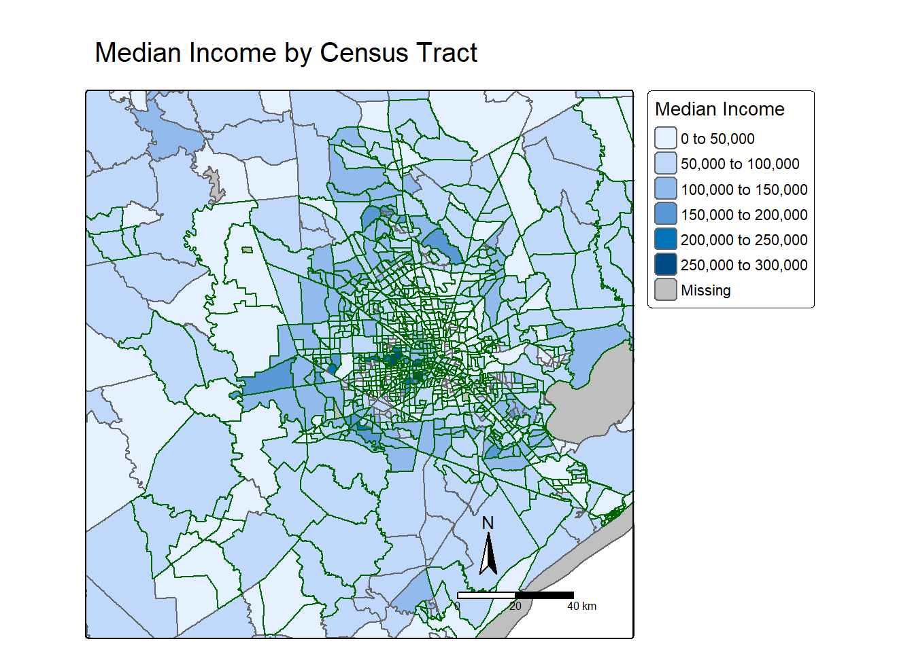
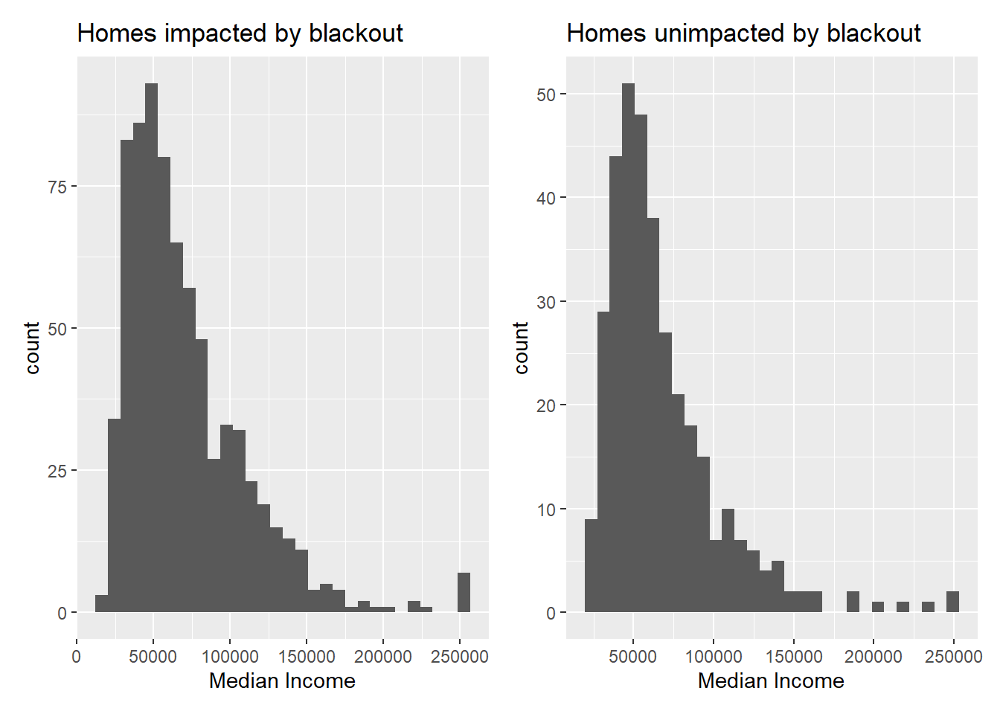

library(sf)
library(stars)
library(terra)
library(spData)
library(geodata)
library(spDataLarge)
library(tidyverse)
library(tmap)
library(patchwork)
#reading in the data with read_stars for the night lights data
night_1 <- read_stars("data/VNP46A1.A2021038.h08v05.001.2021039064328.tif", package = "stars")
night_2 <- read_stars("data/VNP46A1.A2021038.h08v06.001.2021039064329.tif", package = "stars")
night_3 <- read_stars("data/VNP46A1.A2021047.h08v05.001.2021048091106.tif", package = "stars")
night_4 <- read_stars("data/VNP46A1.A2021047.h08v06.001.2021048091105.tif", package = "stars")
#combining into one for each date: 02-07
stars_1 <- st_mosaic(night_1, night_2)
#combining into one for each date: 02-16
stars_2 <- st_mosaic(night_3, night_4)Problem Statement
What impact did the Texas power outage have on different socioeconomic communities?
Goals
“In February 2021, the state of Texas suffered a major power crisis, which came about as a result of three severe winter storms sweeping across the United States on February 10–11, 13–17, and 15–20.”
Tasks for this analysis
estimating the number of homes in Houston that lost power as a result of the first two storms
investigating if socioeconomic factors are predictors of communities recovery from a power outage
Highlights of Analysis:
loading vector/raster data
simple raster operations
simple vector operations
spatial joins
Data
Night lights data
Spatial data is remotely-sensed night lights data, acquired from the Visible Infrared Imaging Radiometer Suite (VIIRS) onboard the Suomi satellite. Specifically, VNP46A1 to detect differences in night lights before and after the storm to identify areas that lost electric power.
Roads
To minimize falsely identifying areas with reduced traffic as areas without power, areas near highways will be ignored. Geofabrik’s download sites will be used to retrieve a shapefile of all highways in Texas and prepared a Geopackage (.gpkg file) containing just the subset of roads that intersect the Houston metropolitan area.
Houses
We can also obtain building data from OpenStreetMap from Geofabrick and prepared a GeoPackage containing only houses in the Houston metropolitan area.
Socioeconomic
We cannot readily get socioeconomic information for every home, so instead we obtained data from the U.S. Census Bureau’s American Community Survey for census tracts in 2019.
read in and combine the data
First a blackout mask was created by finding the change intensity from the night light data. All locations that experienced a drop of more than 200 cm-2sr-1 were assumed to have experienced a blackout.
#find the change in night lights intensity
change_in_intensity <- stars_1 - stars_2
#viewing in a plot
plot(change_in_intensity)downsample set to 1
#reclassify the difference raster, with cut() and breaks
intensity_reclass <- cut(change_in_intensity, breaks = c(200, Inf), labels = "exp. blackout")The data was then vectorized.
#using st_as_sf() to vectorize, check geometries are valid
inten_vec <- st_as_sf(intensity_reclass) %>%
st_make_valid(inten_vec)With the defined region of Houston, the vectorized map from above was cropped to the area of interest.
#make a data.frame x = c(coord), y = c(coords))
bounds <- data.frame(x = c(-96.5, -96.5, -94.5, -94.5), y = c(29, 30.5, 30.5, 29))
#st_as_sf make coords
houston <- bounds %>%
st_as_sf(coords = c("x", "y")) %>%
st_set_crs("EPSG:4326") %>%
st_combine() %>%
st_cast("POLYGON") #turn into a polygon
#bounding the lights data with houston coordinates
houston_lights <- inten_vec[houston, ]
#reprojecting using st_transform
houston_lights_transform <- st_transform(houston_lights, crs = "EPSG:3083")The roads geopackage includes data on roads other than highways. However, we can avoid reading in data we don’t need by taking advantage of st_read’s ability to subset using a SQL query.
Areas within 200m of all highways using st_buffer were identified. Then the areas that experienced blackouts that are further than 200m from a highway were found using st_difference().
query <- “SELECT * FROM gis_osm_roads_free_1 WHERE fclass=‘motorway’”highways <- st_read(“data/gis_osm_roads_free_1.gpkg”, query = query)
#loading query
query1 <- "SELECT * FROM gis_osm_roads_free_1 WHERE fclass='motorway'"
#loading data
highways <- st_read("data/gis_osm_roads_free_1.gpkg", query = query1) %>%
st_transform(3083)
#using a buffer to find areas within 200m
hwys_200 <- highways %>%
st_buffer(dist = 200) %>%
st_union()
#using st_difference to
hwys_further <- st_difference(houston_lights_transform , hwys_200)To find homes impacted by blackouts st_read and the following SQL query to select only residential buildings were used.
SELECT * FROM gis_osm_buildings_a_free_1WHERE (type IS NULL AND name IS NULL)OR type in (‘residential’, ‘apartments’, ‘house’, ‘static_caravan’, ‘detached’)
#__________________________________________________________
#this query selects for residential already
query2 <- "SELECT * FROM gis_osm_buildings_a_free_1 WHERE (type IS NULL AND name IS NULL)OR type in ('residential', 'apartments', 'house', 'static_caravan', 'detached')"
#reading in the buildings data and transforming the geometries
buildings <- st_read("data/gis_osm_buildings_a_free_1.gpkg", query = query2) %>%
st_transform(3083)filter to homes within blackout areas using st_filter().
#using filter to find homes within blackout areas
homes_blackout<- st_filter(buildings, hwys_further)
#printing the number of rows (number of homes within a blackout area)
print(nrow(homes_blackout))[1] 157411Using st_read() to load the geodatabase layers.
#using st_read() to load in gdb layers
#reprojecting to EPSG:3080
acs_geom <- st_read("data/ACS_2019_5YR_TRACT_48_TEXAS.gdb", layer = "ACS_2019_5YR_TRACT_48_TEXAS") %>% st_transform(3083) #transforming geometriesReading layer `ACS_2019_5YR_TRACT_48_TEXAS' from data source
`C:\Users\olivi\Documents\MEDS\olleholt.github.io\blog\eds223_final_blog\data\ACS_2019_5YR_TRACT_48_TEXAS.gdb'
using driver `OpenFileGDB'
Simple feature collection with 5265 features and 15 fields
Geometry type: MULTIPOLYGON
Dimension: XY
Bounding box: xmin: -106.6456 ymin: 25.83716 xmax: -93.50804 ymax: 36.5007
Geodetic CRS: NAD83#reading in the income layer from the gdb
acs_income <- st_read("data/ACS_2019_5YR_TRACT_48_TEXAS.gdb", layer = "X19_INCOME") %>% select("B19013e1","GEOID") #selecting the median income field B19013e1Reading layer `X19_INCOME' from data source
`C:\Users\olivi\Documents\MEDS\olleholt.github.io\blog\eds223_final_blog\data\ACS_2019_5YR_TRACT_48_TEXAS.gdb'
using driver `OpenFileGDB'The income data and the census tract geometries were joined using a left_join() and st_join. Then the number of impacted tracts were found using the unique() function.
#renaming the column in income data to match the correct column in the geometries data
income_new <- acs_income %>% rename("GEOID_Data" = "GEOID")
#left_join/full_join and match column names
#joining income data to census track geom
acs_join <- left_join(acs_geom, income_new,by = join_by(GEOID_Data))
#transforming the houston polygon
houston_3083 <- st_transform(houston, 3083)
#bounding the joined data with houston coordinates
acs_houston <- acs_join[houston_3083, ]
#subsetting the blackout ares to houston area with the gdb layers
houston_subset <- acs_houston[homes_blackout, ]
#the GEO and GEO_Data columns
spatial_join <- st_join(homes_blackout, acs_join)
#unique values in GEOID_Data
census_n <- unique(spatial_join$GEOID_Data)
print(length(census_n))[1] 754Creating plots to compare incomes of impacted tracts to unimpacted tracts.
The first plot is a map of median income by census tract, designating which tracts had blackouts and the second an third plots will compare the distributions of income in impacted and unimpacted tracts.
library(tmap)
#plotting the income and census track data first
#polygons are colored based on median income
#plotting the blackout homes on top of the houston area
tm_shape(acs_join, bbox = st_bbox(hwys_further))+
tm_polygons(fill = "B19013e1", title = "Median Income")+
tm_shape(houston_subset)+
tm_borders(col = "darkgreen")+
tm_compass()+
tm_scalebar()+
tm_title("Median Income by Census Tract")Deprecated tmap v3 code detected. Code translated to v4
library(patchwork)
#selecting for matching values in the GEOID_Data column
impacted <- acs_houston %>% filter(GEOID_Data %in% houston_subset$GEOID_Data)
#selecting for non-matching values in the GEOID_Data column
unimpacted <- acs_houston %>% filter(!GEOID_Data %in% houston_subset$GEOID_Data)
#check to make sure unique GEOID_Data values matches the impacted number of rows
print(length(unique(houston_subset$GEOID_Data)) == nrow(impacted))[1] TRUE#plotting the impacted homes count
impacted_plot <- ggplot()+
geom_histogram(data = impacted, aes(x = B19013e1))+
xlab("Median Income")+
ggtitle("Homes impacted by blackout")
#plotting the unimpacted homes count
unimpacted_plot<- ggplot()+
geom_histogram(data = unimpacted, aes(x = B19013e1))+
xlab("Median Income")+
ggtitle("Homes unimpacted by blackout")
#using patchwork to plot them together
impacted_plot+unimpacted_plot`stat_bin()` using `bins = 30`. Pick better value with `binwidth`.Warning: Removed 4 rows containing non-finite values (`stat_bin()`).`stat_bin()` using `bins = 30`. Pick better value with `binwidth`.Warning: Removed 6 rows containing non-finite values (`stat_bin()`).
Discussion
The histogram distributions look very similar on first glance. The y ranges are different but overall both plots are skewed to the right and unimodal. The map and the histograms do show that there is more of an impact from the storm for households with incomes less than $50,000 annually and a lower impact for blackouts for households. The limitations in the census tract data is that it is voluntary and therefore we do not know if it accurately represents the population as well as it could.